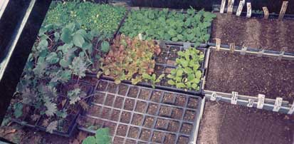
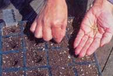
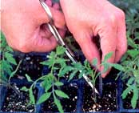
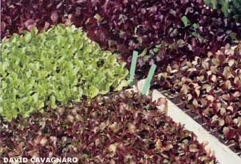
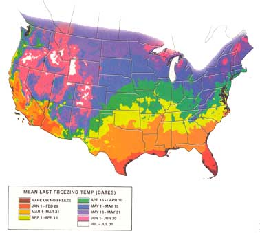

Start Your Own Seeds
By Jill Jesiolowski Cebenko
December/January 2001
by Jill Jesiolowski Cebenko
Starting seeds indoors provides multiple benefits: You'll get earlier harvests of crops, such as tomatoes and peppers, and earlier blooms for many flowers.
• You can choose from hundreds of interesting varieties available through seed catalogs rather than being stuck with the selection (and condition) of transplants at the local discount store or garden center.
• You can be sure your seedlings are raised organically.
• If you plant a large garden, homegrown transplants can save you a bundle of money.
• And last but not least, you don't have to wait for the spring mud to dry out to start playing in the dirt again! There's nothing like watching tiny seedlings popping up in January and February to help chase away the winter blues.
If you haven't started seeds indoors before, trust us. It's easy. Using the basic equipment described here and following these six simple steps, you can have a whole bevy of plants ready for your vegetable garden and flower beds for pennies apiece. The map and chart below will help you keep track of when to sow each crop for your region.
SIX SIMPLE STEPS
1. Your seed-starting mix should be damp, like a wrung-out sponge. If it's dry, put it in a bucket and moisten it thoroughly. Fill your containers with this damp mix, gently tamp it down and place two seeds on top of the soil. Sprinkle a little more mix (or disease-preventing NoDampOff moss ) on top of the seeds and then cover the tray with plastic. Place it in a warm spot (70 degrees or so). Most seeds do not need light at this stage, but be sure to check the tray every day for sprouts.
2. As soon as you see the first sprouts, remove the plastic cover and place the tray under fluorescent lights, just an inch or two from the bulbs. (Regular incandescent light bulbs won't work for seed starting because they produce too much heat.) Keep the lights on for about 16 hours a day and water as needed, letting the surface dry out between waterings.
3. When your seedlings form their first true leaves (not the little round leaves they have when they first emerge, but the next set) snip off the weaker of the two seedlings in each cell.
4. As the plants grow, move the lights up - or the tray down - to keep the plants within 1 to 2 inches of the lights. Fertilize every other week or so.
5. If you start plants such as tomatoes or peppers extra early and have seedlings that are about 5 weeks old and are going to stay in the house for several more weeks, it's best to move them into larger pots. If you've timed your sowing right, there's usually no need to "pot up" seedlings of plants like lettuce and broccoli that will be set outdoors when they are 4 to 6 weeks old. Many flower seedlings are so slow growing they will remain happy in the smaller cell packs until it's time to move outdoors.
6. When it's time for plants to move outside, always harden them off for a week or more by gradually leaving them outside for a couple of hours longer each day, so they can adjust to the much brighter light. Then tuck your homegrown seedlings in their permanent garden spots.
Preventing Fungus Problems
Seedlings that wilt and die almost overnight, or seeds that never sprout, probably were killed by "damping off" disease. This pesky disease is caused by fungi that attack when the soil is kept too wet or seedlings are stressed by low light levels. To reduce damping off problems, keep your seedlings close to the lights and take good care not to over-water. For added protection, cover your seeds with milled sphagnum moss. Researchers with the University of California have found that this sphagnum moss contains bacteria which compete with the harmful fungus and also secrete an antibiotic compound that prevents growth of the fungus. This light-colored milled sphagnum moss is not the same as dark brown peat moss; it's sold in small bags, under the brand name "NoDampOff Seed Starter." (Ask your local garden center to carry the NoDampOff product, or contact the manufacturer at www.mosserlee.com .)
Average Last
Spring Frost Dates
This map details the average last frost date in a given region, based on data compiled by the National Climactic Data Center. Use the key to figure out the approximate date for where you live and record it at the top of the SeedStarting Planner .
Your Personal
Seed-Starting Planner
Some plants do best with only three or four weeks of indoor growing, while others may need to stay inside for six to eight weeks. Also, cool-loving crops like cabbages and pansies should go outside early, a month or more before your last frost, while others shouldn't go out until the danger of frost has passed. To determine optimum planting times for your location, record your average last frost date on the chart below, based on the map above. Then count backward on the calendar and fill in the corresponding dates for each category. The chart also gives guidelines for when each type of seedling should be moved outdoors to begin to harden off. * indicates the crop also can be seeded directly in the garden roughly four to six weeks after the indoor start date.
Your Last Spring Frost
Date:______________
(Taken from the map )
Start indoors10-12 weeks
before last frost
Date: ______________
VegetablesWhen to set out
(before/after last frost)
Onions 4 weeks before
Parsley* 4-6 weeks before
Broccoli 4-6 weeks before
Cabbage 4-6 weeks before
Cauliflower 4 weeks before
Flowers
Pansies 4 weeks before
Gaillardia 2 weeks before
Nicotiana 2 weeks before
Rudbeckia 2 weeks before
Yarrow 2 weeks before
Start indoors 6-8 weeks
before last frost
Date:______________
VegetablesWhen to set out
(before/after last frost)
Peppers 2 weeks after
Eggplant 2 weeks after
Tomatoes Set out at last frost
Swiss Chard* 2-4 weeks before
Lettuce* 4 weeks before
Flowers
Ageratum 1 week after
Alyssum* around last frost
Bachelor's
Buttons around last frost
Calendula* around last frost
Cleome* around last frost
Cosmos* around last frost
Dusty Miller around last frost
Hollyhock* around last frost
Marigolds* one week after
Morning Glory* 2 weeks after
Nasturtium* 2 weeks after
Petunias 1 week after
Portulaca* 1 week after
Salvia 1 week after
Start indoors 2-4 weeks
before last frost
Date: ______________
VegetablesWhen to set out
(before/after last frost)
Basil* 2 weeks after
Dill* 2 weeks after
Cucumbers* 2 weeks after
Summer Squash* set out around last
frost
Flowers
Celosia 2 weeks after
Coleus 2 weeks after
Impatiens 2 weeks after
Vinca 2 weeks after
(Periwinkle)
Start indoors around the
last frost date
Date: ______________
VegetablesWhen to set out
(before/after last frost)
Cantaloupes* 4 weeks after
Okra* 4 weeks after
Winter Squash* 4 weeks after
|
 For best results, use a growing mix labeled specifically for seed starting |
 Plant two tomato seeds, then clip out the weaker seedling |
 Once you've hardened off the seedlings, it's time to play in the dirt |
 Lots of lovely red and green lettuce transplants stand ready to head outside. |
 |
 |